|
|
Effect of temperature and pressureRates of all reactions, including those catalysed by enzymes, rise with increase in temperature in accordance with the Arrhenius equation. where k is the kinetic rate constant for the reaction, A is the Arrhenius constant, also known as the frequency factor, DG* is the standard free energy of activation (kJ M−1) which depends on entropic and enthalpic factors, R is the gas law constant and T is the absolute temperature. Typical standard free energies of activation (15 - 70 kJ M−1) give rise to increases in rate by factors between 1.2 and 2.5 for every 10°C rise in temperature. This factor for the increase in the rate of reaction for every 10°C rise in temperature is commonly denoted by the term Q10 (i.e., in this case, Q10 is within the range 1.2 - 2.5). All the rate constants contributing to the catalytic mechanism will vary independently, causing changes in both Km and Vmax. It follows that, in an exothermic reaction, the reverse reaction (having a higher activation energy) increases more rapidly with temperature than the forward reaction. This, not only alters the equilibrium constant (see equation 1.12), but also reduces the optimum temperature for maximum conversion as the reaction progresses. The reverse holds for endothermic reactions such as that of glucose isomerase (see reaction [1.5]) where the ratio of fructose to glucose, at equilibrium, increases from 1.00 at 55°C to 1.17 at 80°C. In general, it would be preferable to use enzymes at high temperatures in order to make use of this increased rate of reaction plus the protection it affords against microbial contamination. Enzymes, however, are proteins and undergo essentially irreversible denaturation (i.e.. conformational alteration entailing a loss of biological activity) at temperatures above those to which they are ordinarily exposed in their natural environment. These denaturing reactions have standard free energies of activation of about 200 - 300 kJ ˣ mol−1 (Q10 in the range 6 - 36) which means that, above a critical temperature, there is a rapid rate of loss of activity (Figure 1.5). The actual loss of activity is the product of this rate and the duration of incubation (Figure 1.6). It may be due to covalent changes such as the deamination of asparagine residues or non-covalent changes such as the rearrangement of the protein chain. Inactivation by heat denaturation has a profound effect on the enzymes productivity (Figure 1.7). 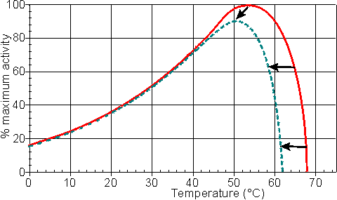 Figure 1.5. A schematic diagram showing the effect of the temperature on the activity of an enzyme catalysed reaction. —— short incubation period; ----- long incubation period. Note that the temperature at which there appears to be maximum activity varies with the incubation time. 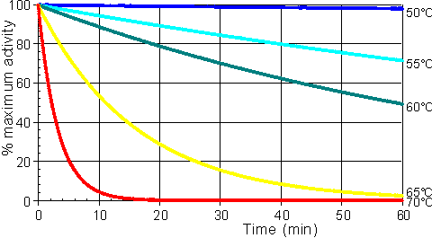 Figure 1.6. A schematic diagram showing the effect of the temperature on the stability of an enzyme catalysed reaction. The curves show the percentage activity remaining as the incubation period increases. From the top they represent equal increases in the incubation temperature (50°C, 55°C, 60°C, 65°C and 70°C). 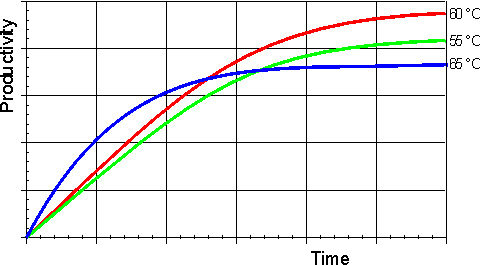 Figure 1.7. A schematic diagram showing the effect of the temperature on the productivity of an enzyme catalysed reaction. —— 55°C; —— 60°C; —— 65°C. The optimum productivity is seen to vary with the process time, which may be determined by other additional factors (e.g., overhead costs). It is often difficult to get precise control of the temperature of an enzyme catalysed process and, under these circumstances, it may be seen that it is prudent to err on the low temperature side. The thermal denaturation of an enzyme may be modelled by the following serial deactivation scheme:
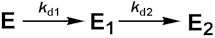E1 --(kd2)--> E2" width="215" height="38"> [1.11] where kd1 and kd2 are the first-order deactivation rate coefficients, E is the native enzyme which may, or may not, be an equilibrium mixture of a number of species, distinct in structure or activity, and E1 and E2 are enzyme molecules of average specific activity relative to E of A1 and A2. A1 may be greater or less than unity (i.e. E1 may have higher or lower activity than E) whereas A2 is normally very small or zero. This model allows for the rare cases involving free enzyme (e.g., tyrosinase) and the somewhat commoner cases involving immobilised enzyme (see Chapter 3) where there is a small initial activation or period of grace involving negligible discernible loss of activity during short incubation periods but prior to later deactivation. Assuming, at the beginning of the reaction: 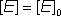 (1.22) and: 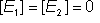 (1.23) At time t, 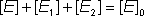 (1.24) It follows from the reaction scheme [1.11], Integrating equation 1.25 using the boundary condition in equation 1.22 gives: From the reaction scheme [1.11], 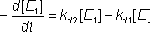 (1.27) Substituting for [E] from equation 1.26, 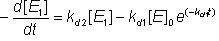 (1.28) Integrating equation 1.27 using the boundary condition in equation 1.23 gives: 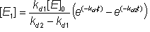 (1.29) If the term 'fractional activity' (Af) is introduced where,
then, substituting for [E2] from equation 1.24, gives: 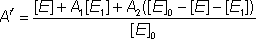 (1.31) therefore: When both A1 and A2 are zero, the simple first order deactivation rate expression results The half-life (t1/2) of an enzyme is the time it takes for the activity to reduce to a half of the original activity (i,e. Af = 0.5). If the enzyme inactivation obeys equation 1.33, the half-life may be simply derived, 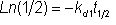 (1.34) therefore: 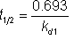 (1.35) In this simple case, the half-life of the enzyme is shown to be inversely proportional to the rate of denaturation. Many enzyme preparations, both free and immobilised, appear to follow this series-type deactivation scheme. However because reliable and reproducible data is difficult to obtain, inactivation data should, in general, be assumed to be rather error-prone. It is not surprising that such data can be made to fit a model involving four determined parameters (A1, A2, kd1 and kd2). Despite this possible reservation, equations 1.32 and 1.33 remain quite useful and the theory possesses the definite advantage of simplicity. In some cases the series-type deactivation may be due to structural microheterogeneity, where the enzyme preparation consists of a heterogeneous mixture of a large number of closely related structural forms. These may have been formed during the past history of the enzyme during preparation and storage due to a number of minor reactions, such as deamidation of one or two asparagine or glutamine residues, limited proteolysis or disulphide interchange. Alternatively it may be due to quaternary structure equilibria or the presence of distinct genetic variants. In any case, the larger the variability the more apparent will be the series-type inactivation kinetics. The practical effect of this is that usually kd1 is apparently much larger than kd2 and A1 is less than unity. In order to minimise loss of activity on storage, even moderate temperatures should be avoided. Most enzymes are stable for months if refrigerated (0 - 4°C). Cooling below 0°C, in the presence of additives (e.g., glycerol) which prevent freezing, can generally increase this storage stability even further. Freezing enzyme solutions is best avoided as it often causes denaturation due to the stress and pH variation caused by ice-crystal formation. The first order deactivation constants are often significantly lower in the case of enzyme-substrate, enzyme-inhibitor and enzyme-product complexes which helps to explain the substantial stabilising effects of suitable ligands, especially at concentrations where little free enzyme exists (e.g. [S] >> Km). Other factors, such as the presence of thiol anti-oxidants, may improve the thermal stability in particular cases. It has been found that the heat denaturation of enzymes is primarily due to the proteins' interactions with the aqueous environment. They are generally more stable in concentrated, rather than dilute, solutions. In a dry or predominantly dehydrated state, they remain active for considerable periods even at temperatures above 100°C. This property has great technological significance and is currently being exploited by the use of organic solvents (see Chapter 7). Pressure changes will also affect enzyme catalysed reactions. Clearly any reaction involving dissolved gases (e.g., oxygenases and decarboxylases) will be particularly affected by the increased gas solubility at high pressures. The equilibrium position of the reaction will also be shifted due to any difference in molar volumes between the reactants and products. However an additional, if rather small, influence is due to the volume changes which occur during enzymic binding and catalysis. Some enzyme-reactant mixtures may undergo reductions in volume amounting to up to 50 ml mole−1 during reaction due to conformational restrictions and changes in their hydration. This, in turn, may lead to a doubling of the kcat, and/or a halving in the Km for a 1000 fold increase in pressure. The relative effects on kcat and Km depend upon the relative volume changes during binding and the formation of the reaction transition states.
This page was established in 2004 and last updated by Martin
Chaplin |